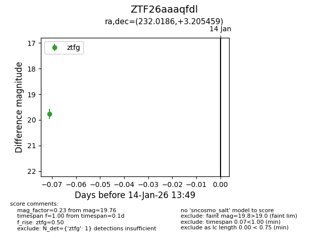
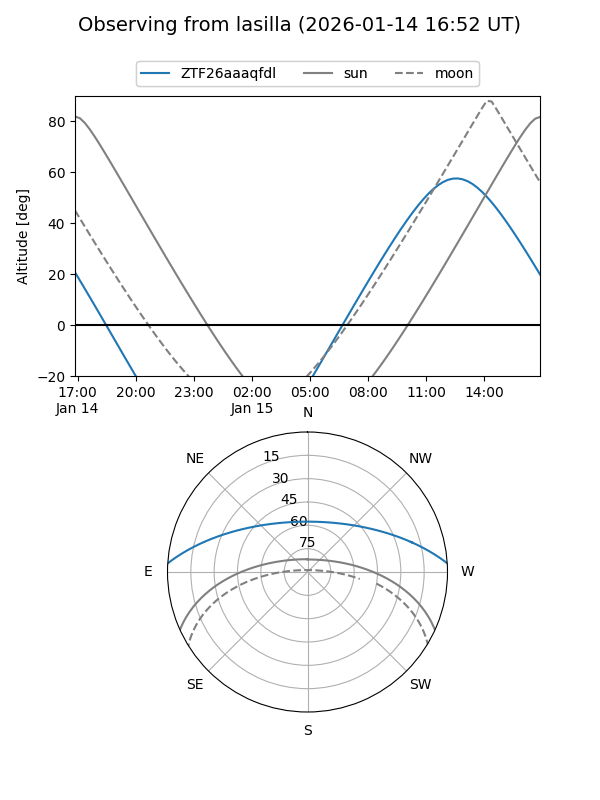
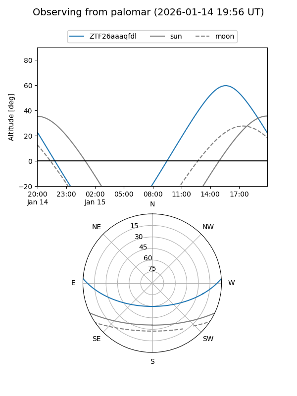

ZTF26aaaqfdl
Target ZTF26aaaqfdl at 2026-01-14 13:50
Aliases and brokers:
FINK: link
Lasair: link
ALeRCE: link
alt names
ZTF26aaaqfdl (ztf,fink_ztf)
Coordinates:
equatorial (ra, dec) = 232.0186,+3.20546
equatorial (HMS+DMS) = 15:28:04.47,+03:12:19.65
galactic (l, b) = (7.2455,+45.60304)
Flags:
Photometry:
last ztfg=19.76
1 ztfg detections
Lightcurve

Visibility


Additional plots